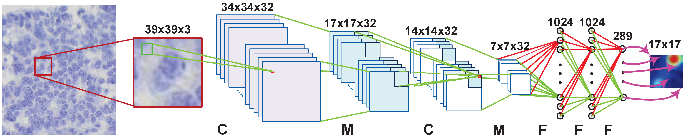
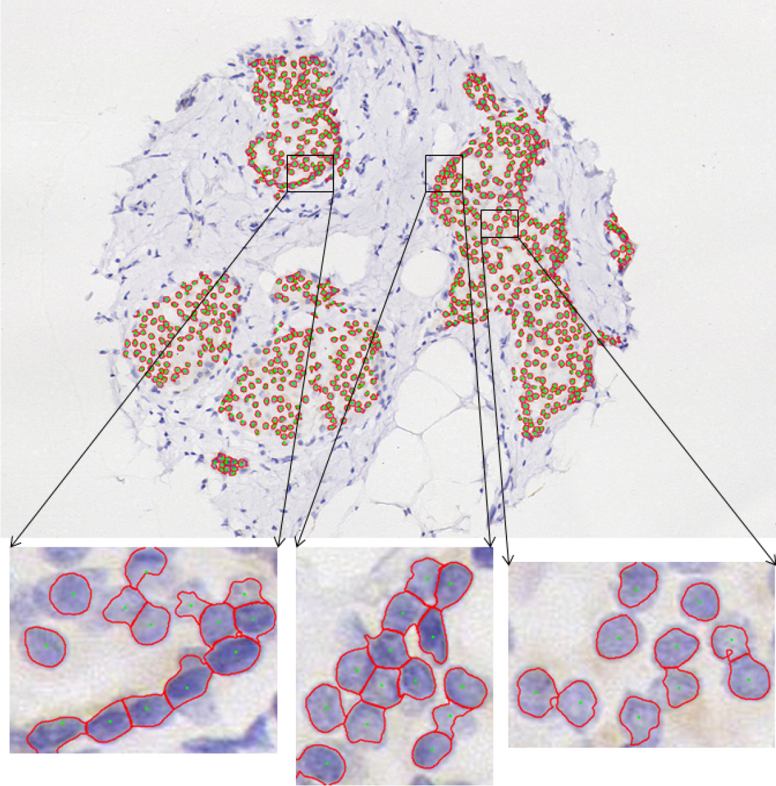
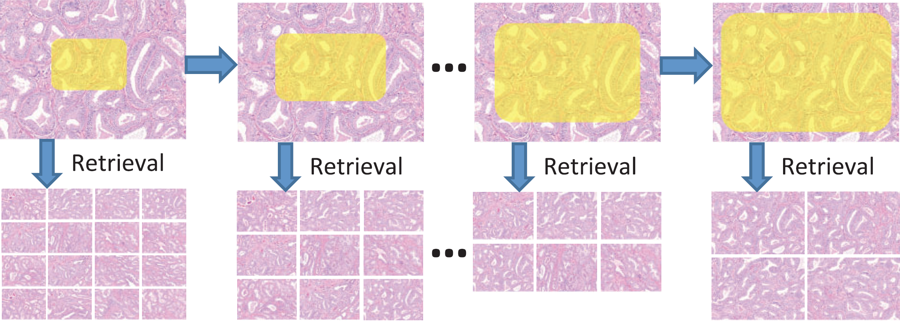
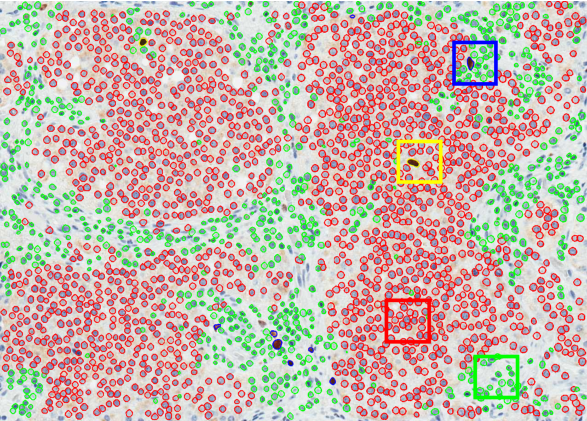

|  |
Object Detection in Digital Pathology and Microscopy Images Fuyong Xing, Yuanpu Xie, Lin Yang IEEE Transactions on Medical Imaging, vol. 35, no. 2, pp. 550-566, 2016 Yuanpu Xie, Fuyong Xing, Xiangfei Kong, Hai Su, Lin Yang The 18th International Conference on Medical Image Computing and Computer Assisted Intervention (MICCAI), vol. 9351, pp. 358-365, 2015 |
| | |
|  |
High-thoughput Image Segmentation Fuyong Xing, Xiaoshuang Shi, Zizhao Zhang, Jinzheng Cai, Yuanpu Xie, Lin Yang The 19th International Conference on Medical Image Computing and Computer Assisted Intervention (MICCAI), vol. 9902, pp. 183-190, 2016 Hai Su, Fuyong Xing, Xiangfei Kong, Yuanpu Xie, Shaoting Zhang, Lin Yang The 18th International Conference on Medical Image Computing and Computer Assisted Intervention (MICCAI), vol. 9351, pp. 383-390, 2015 Xin Qi, Fuyong Xing, David J. Foran, Lin Yang IEEE Transactions on Biomedical Engineering, vol. 59, no. 3, pp. 754-765, 2012 |
| | |
|  |
Scalable Image Mining Lin Yang, Xin Qi, Fuyong Xing, Tahsin Kurc, Joel Saltz, David J. Foran Bioinformatics, vol. 30, no. 7, pp. 996-1002, 2014 Fuyong Xing, Xin Qi, David J. Foran, Tahsin Kurc, Joel Saltz, Lin Yang Data- and Compute-Intensive Clinical and Translational Imaging Applications Workshop in conjunction with the 15th International Conference on Medical Image Computing and Computer Assisted Intervention (DCICTIA-MICCAI), pp. 61-70, Nice, France, 2012 |
| | |
|  |
Biomarker Computation Fuyong Xing, Hai Su, Janna Neltner, Lin Yang IEEE Transactions on Biomedical Engineering, vol. 61, no. 3, pp. 859-870, 2014 Fuyong Xing, Hai Su, Lin Yang The 16th International Conference on Medical Image Computing and Computer Assisted Intervention (MICCAI), vol. 8149, pp. 436-443, 2013 |
| |